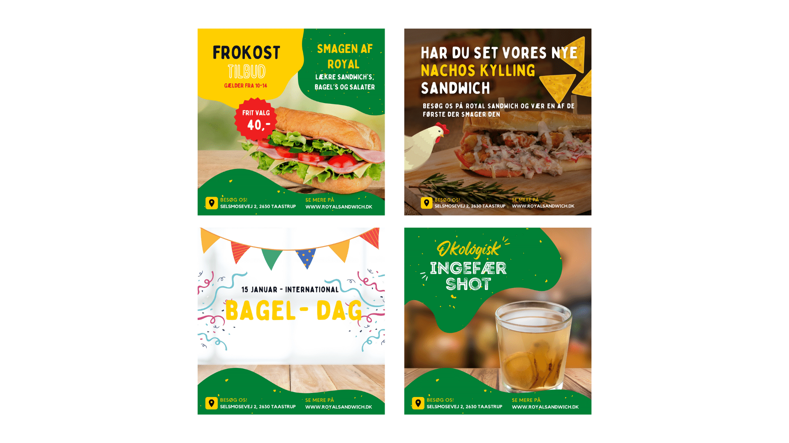
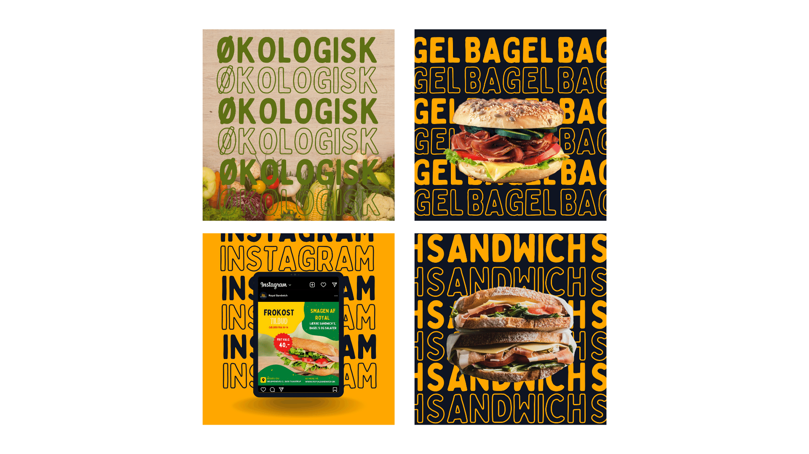
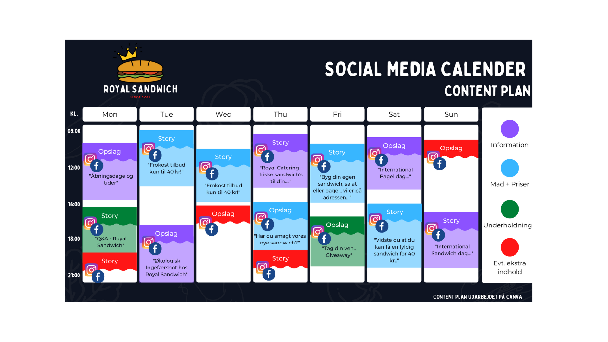
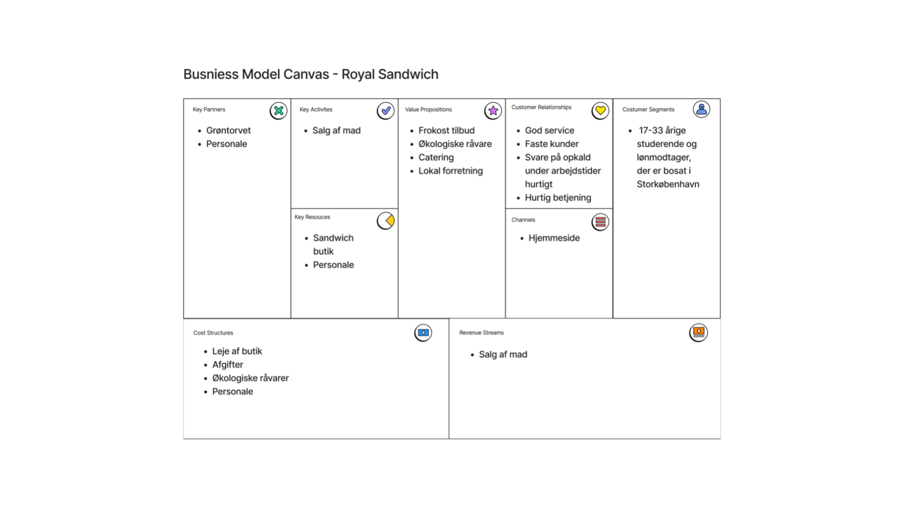
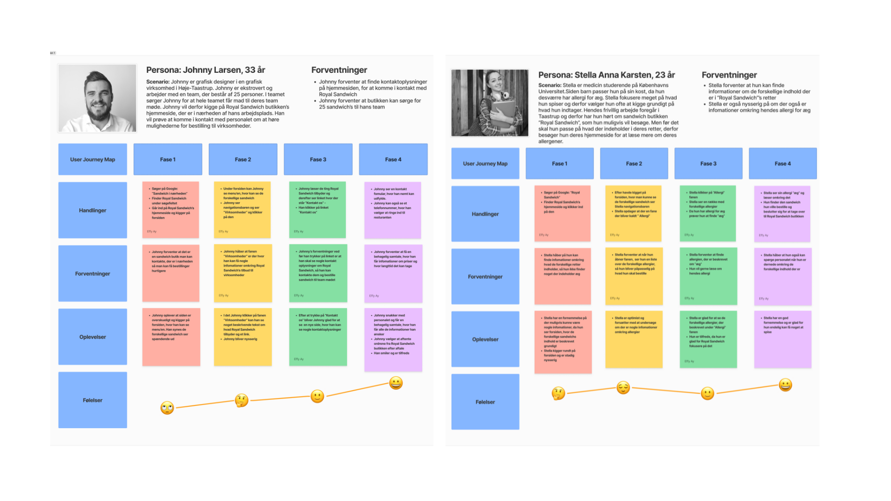
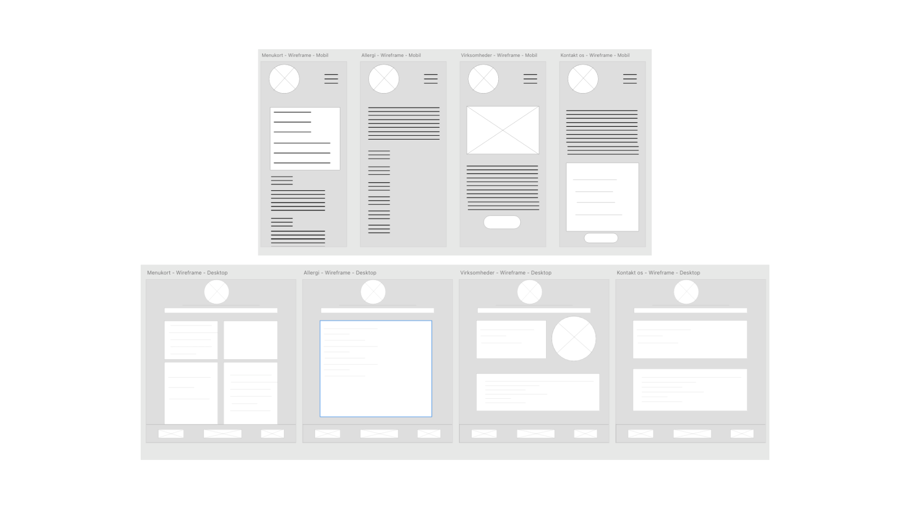
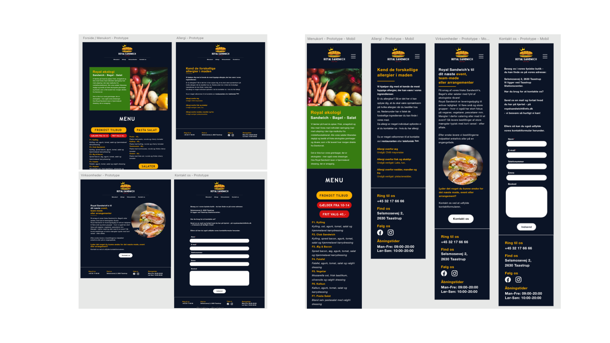
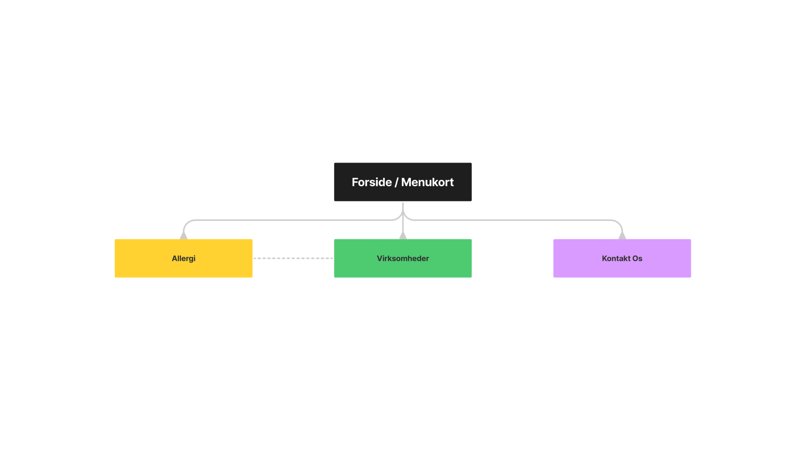

Royal Sandwich
The first exam project with a real client was challenging.
In the project I focused on the visual identity of a sandwich bar and I also designed a menu card for them that they use today.
Throughout the project, I have thought through what the different colors can express to their customers and how they want the colors to attract more customers.
In addition to the visuals,
I have also performed competitor analysis of their competitors and target group analysis, performed an SEO optimization for their website,
personas, BMC, User Journey Maps,
social media strategy marketing strategy and a new designmanual.
| Role | Lead Designer |
| Deliverables | Visual Identity, Menu Card, Logo Desgin, SEO optimization, Marketing strategy, Social media strategy |
| Created with | Zealand - School Project |








